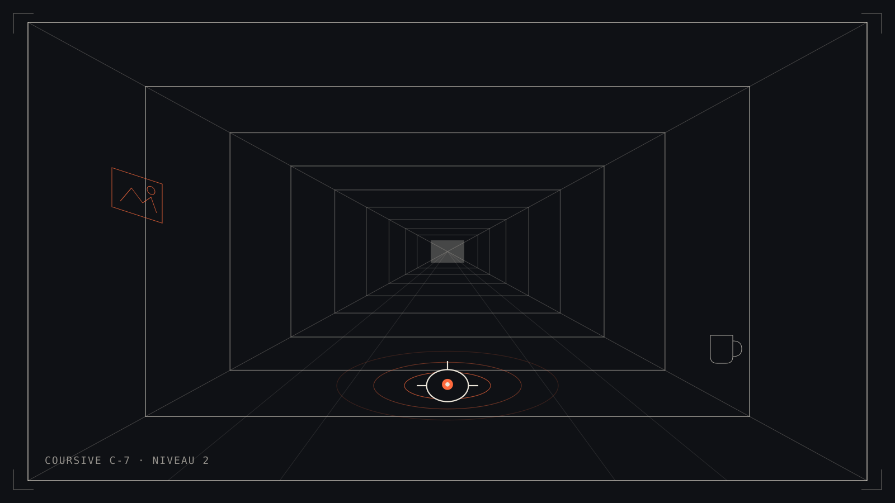

Devlog #2 · Direction artistique
Dessiner le vide

Dans le premier devlog, Inès racontait comment le son est devenu le cœur des Archives de Vela. Ce mois-ci, je voulais parler de l'autre moitié du problème : comment on dessine un vaisseau dans lequel il n'y a plus personne, sans que le joueur s'y ennuie au bout de dix minutes.
Le problème : un lieu vide est vite ennuyeux
Un vaisseau abandonné, ce sont des couloirs, des portes, des salles techniques. Sur nos premières maquettes, tout se ressemblait : gris sur gris, des tuyaux partout, aucun point de repère. Les testeurs se perdaient, et surtout, ils ne ressentaient rien. Il fallait que le vide raconte quelque chose.
Trois règles pour l'ambiance
1. Deux couleurs, pas plus
Le vaisseau est baigné dans une lumière froide, presque blanche, celle du pulsar. Tout ce qui est lié à l'équipage — et donc à la mémoire — est en orange : les échos, les objets personnels, les dessins de Nell. Le joueur apprend très vite, sans tutoriel, à suivre l'orange. C'est là qu'il y a une histoire à écouter.
Cette règle nous a aussi beaucoup simplifié la vie : chaque fois que nous hésitons sur une couleur, la réponse est déjà écrite.
2. Des traces plutôt que des personnages
Aucun membre de l'équipage n'apparaît à l'écran. À la place, chaque salle contient des traces de vie : une tasse sur une console, une couverture roulée dans un recoin, une porte couverte de dessins d'enfant. Ces objets racontent autant que les dialogues, et laissent au joueur le plaisir d'imaginer.
3. Rendre le son visible
Comme le jeu repose sur l'écoute, nous avons dessiné les sons. Chaque écho apparaît comme une série de cercles qui s'élargissent depuis sa source, plus ou moins nets selon la distance. C'était d'abord une aide pour les testeurs, c'est devenu un pilier de notre accessibilité : les joueurs sourds ou malentendants peuvent terminer le jeu sans le son.

Ce que nous avons abandonné
Notre première version visait le photoréalisme : textures détaillées, reflets, poussière en suspension. C'était impressionnant en capture d'écran, mais beaucoup trop lourd à produire pour une équipe de cinq personnes, et étrangement froid. Nous sommes passés à un style plus graphique, fait de formes simples, de traits fins et d'aplats. Le résultat est plus rapide à produire, beaucoup plus lisible, et ressemble enfin à une planche d'archive — ce que le Mnémosyne est, au fond.
Si une salle est belle mais muette, elle est à refaire.
Et ensuite ?
Prochaine étape pour le studio Flexarion : le premier niveau entièrement jouable, le Cœur, la salle des machines. Sofiane prépare de son côté un devlog sur la façon dont il transforme les fontaines d'Aix-en-Provence en échos de vaisseau. En attendant, retrouvez les environnements du jeu sur sa page de présentation.